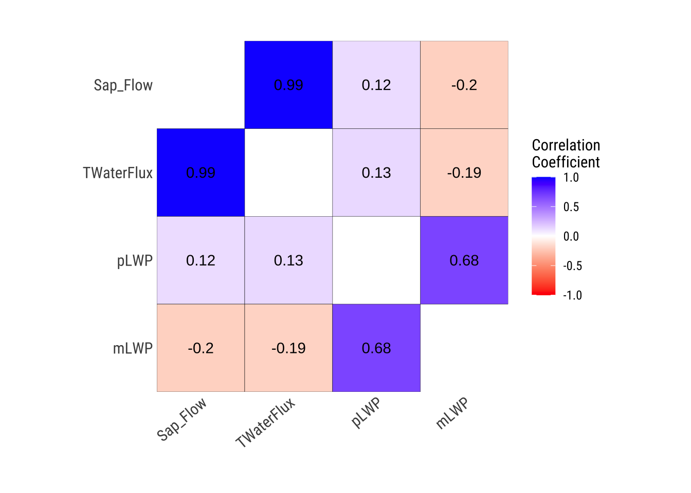
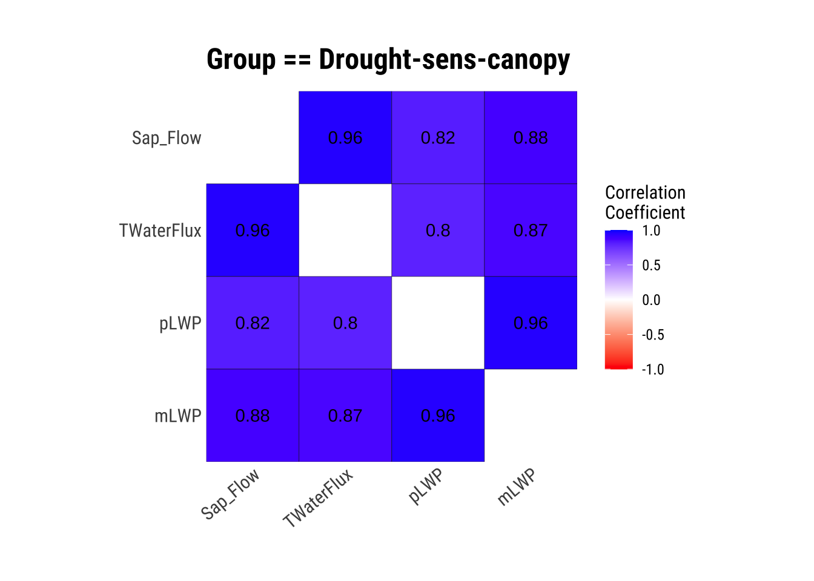
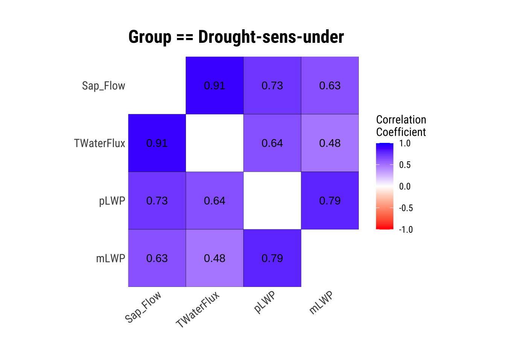
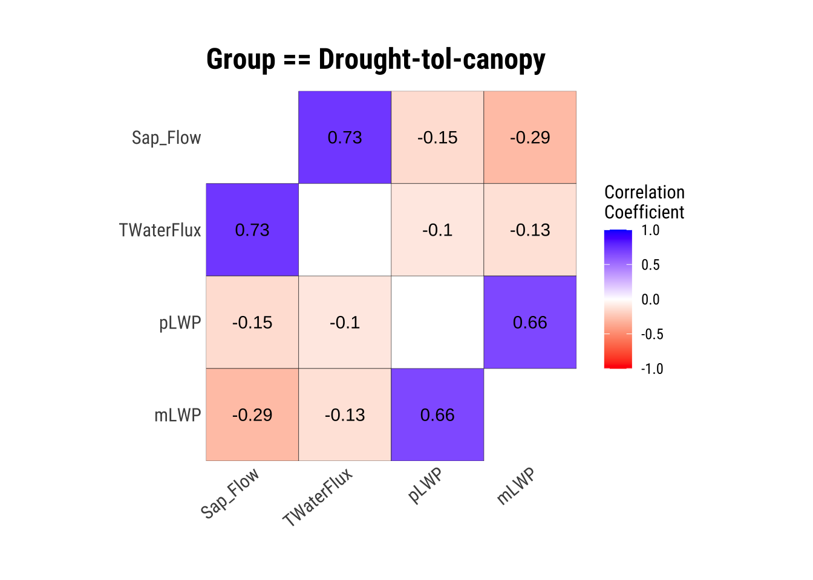
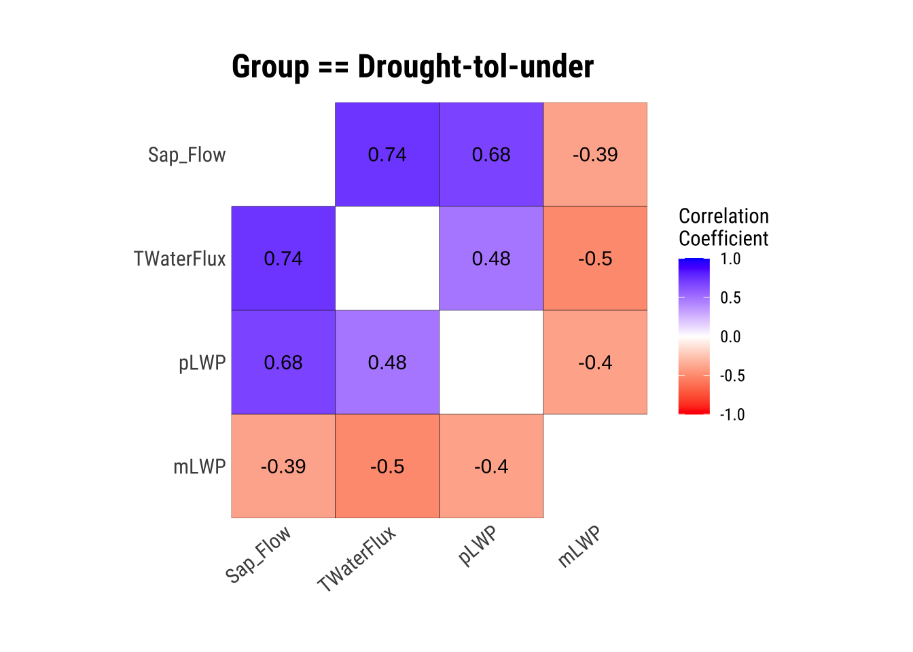
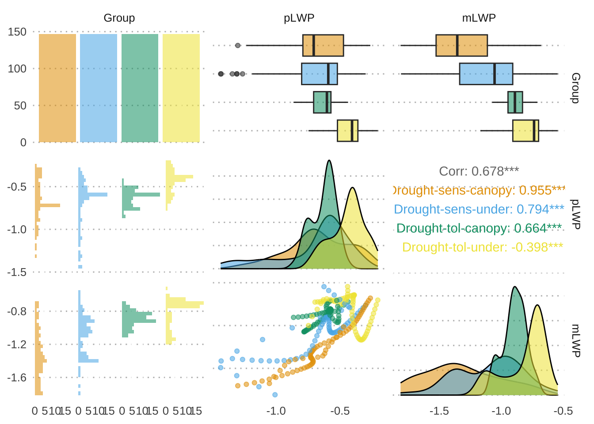
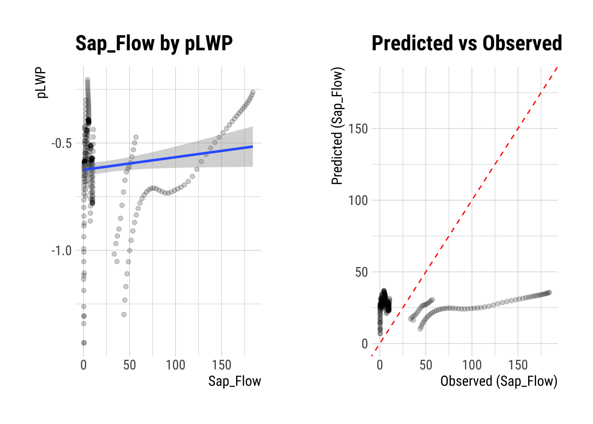
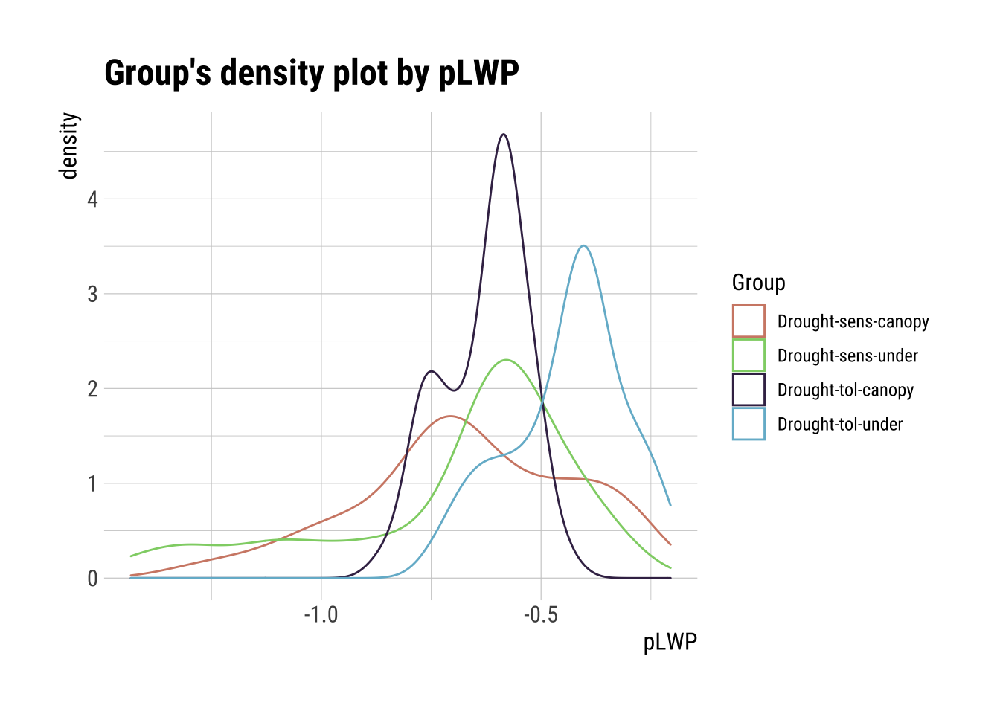
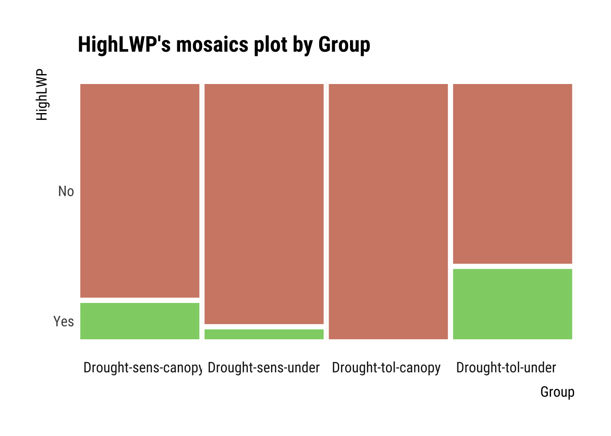

The downloaded binary packages are in
/var/folders/c0/w15tbmpn36d7jj_tpjm_sz9c0000gn/T//RtmpZnNSCJ/downloaded_packages
pacman::p_load(colorblindr, dlookr, formattable, GGally, ggdist, ggpubr, ggridges, here, tidyverse)# Set global ggplot() theme# Theme pub_clean() from the ggpubr package with base text size = 16theme_set(theme_pubclean(base_size =12)) # All axes titles to their respective far right sidestheme_update(axis.title =element_text(hjust =1))# Remove axes tickstheme_update(axis.ticks =element_blank()) # Remove legend keytheme_update(legend.key =element_blank())
Load the Examine a Data Set
We will be using open source data from UArizona researchers that investigates the effects of climate change on canopy trees. (Meredith, Ladd, and Werner 2021)
# Let's load the canopy tree data setdataset <-read.csv(here("Data7_EDA_In_R_Book", "data", "Data_Fig2_Repo.csv"))# What does the data look like?dataset |>head() |>formattable()
Date
Group
Sap_Flow
TWaterFlux
pLWP
mLWP
10/4/19
Drought-sens-canopy
184.040975
82.243292
-0.2633781
-0.6797690
10/4/19
Drought-sens-under
2.475989
1.258050
-0.2996688
-0.7613264
10/4/19
Drought-tol-canopy
10.598949
4.405479
-0.4375563
-0.7225572
10/4/19
Drought-tol-under
4.399854
2.055276
-0.2052237
-0.7028581
10/5/19
Drought-sens-canopy
182.905444
95.865255
-0.2769280
-0.7082610
10/5/19
Drought-sens-under
2.459209
1.225792
-0.3205980
-0.7928576
Describe and Visualize Correlations
Correlations are a statistical relationship between two numerical variables, may or may not be causal. Exploring correlations in your data allows you determine data independence, a major assumption of parametric statistics, which means your variables are both randomly collected.
If you’re interested in some underlying statistics…
Note that the dlookr default correlation is the Pearson’s \(r\) coefficient, but you can specify any method you would like: correlate(dataset, method = ""), where the method can be "pearson" for Pearson’s \(r\), "spearman" for Spearman’s\(\rho\), or "kendall" for Kendall’s\(\tau\). The main differences are that Pearson’s \(r\) assumes a normal distribution for ALL numerical variables, whereas Spearman’s \(\rho\) and Kendall’s \(\tau\) do not, but Spearman’s \(\rho\) requires \(N > 10\), and Kendall’s \(\tau\) does not. Notably, Kendall’s \(\tau\) performs as well as Spearman’s \(\rho\) when \(N > 10\), so its best to just use Kendall’s \(\tau\) when data are not normally distributed.
# Table of correlations between numerical variables (we are sticking to the default Pearson's r coefficient)correlate(dataset) |>formattable()
var1
var2
coef_corr
TWaterFlux
Sap_Flow
0.9881370
pLWP
Sap_Flow
0.1202809
mLWP
Sap_Flow
-0.2011949
Sap_Flow
TWaterFlux
0.9881370
pLWP
TWaterFlux
0.1256446
mLWP
TWaterFlux
-0.1893302
Sap_Flow
pLWP
0.1202809
TWaterFlux
pLWP
0.1256446
mLWP
pLWP
0.6776509
Sap_Flow
mLWP
-0.2011949
TWaterFlux
mLWP
-0.1893302
pLWP
mLWP
0.6776509
# Correlation matrix of numerical variablesdataset |>plot_correlate()

Visualize Correlations within Groups
If we have groups that we will compare later on, it is a good idea to see how each numerical variable correlates within these groups.
dataset |>group_by(Group) |>plot_correlate()




This is great, we have our correlations within groups! However, the correlation matrices aren’t always the most intuitive, so let’s plot!
We will be using the ggpairs() function within the GGally package. Specifically, we are looking at the correlations between predawn leaf water potential pLWP and midday leaf water potential mLWP. Leaf water potential is a key indicator for how stressed plants are in droughts.
dataset |> dplyr::select(Group, pLWP, mLWP) |>ggpairs(aes(color = Group, alpha =0.5)) +theme(strip.background =element_blank()) +# I don't like facet strip backgrounds...scale_fill_OkabeIto() +scale_color_OkabeIto()

Describe and Visualize Relationships Based on Target Variables
Target Variables
Target variables are essentially numerical or categorical variables that you want to relate others to in a data frame. dlookr does this through the target_by() function, which is similar to group_by() in dplyr. The relate() function then briefly analyzes the relationship between the target variable and the variables of interest.
The relationships below will have the formula relationship target ~ predictor.
Numerical Target Variables: Numerical Variable of Interest
# First, we need to remove NAs, they cause an errordataset.noNA <- dataset |>drop_na()# The numerical predictor variable that we wantnum <-target_by(dataset.noNA, Sap_Flow)# Relating the variable of interest to the numerical target variablenum_num <-relate(num, pLWP)# Summary of the regression analysis - the same as the summary from lm(Formula)summary(num_num)
Call:
lm(formula = formula_str, data = data)
Residuals:
Min 1Q Median 3Q Max
-32.719 -26.647 -20.924 -0.811 148.353
Coefficients:
Estimate Std. Error t value Pr(>|t|)
(Intercept) 42.167 7.971 5.290 2.51e-07 ***
pLWP 24.600 12.266 2.006 0.0459 *
---
Signif. codes: 0 '***' 0.001 '**' 0.01 '*' 0.05 '.' 0.1 ' ' 1
Residual standard error: 46.2 on 274 degrees of freedom
Multiple R-squared: 0.01447, Adjusted R-squared: 0.01087
F-statistic: 4.022 on 1 and 274 DF, p-value: 0.04589
# Plotting the linear relationshipplot(num_num)

Numerical Target Variables: Categorical Variable of Interest
Formula: pLWP (numerical response) ~ Group (categorical predictor)
# The categorical predictor variable that we wantnum <-target_by(dataset, pLWP) # We need to change Group to a factornum$Group <-as.factor(num$Group)# Relating the variable of interest to the numerical target variablenum_cat <-relate(num, Group)# Summary of the ANOVA analysis - the same as the summary from anova(lm(Formula))summary(num_cat)
Call:
lm(formula = formula(formula_str), data = data)
Residuals:
Min 1Q Median 3Q Max
-0.73720 -0.09700 0.03598 0.11314 0.40655
Coefficients:
Estimate Std. Error t value Pr(>|t|)
(Intercept) -0.66993 0.02466 -27.166 < 2e-16 ***
GroupDrought-sens-under -0.02621 0.03488 -0.751 0.453
GroupDrought-tol-canopy 0.04002 0.03488 1.148 0.252
GroupDrought-tol-under 0.22969 0.03488 6.586 2.33e-10 ***
---
Signif. codes: 0 '***' 0.001 '**' 0.01 '*' 0.05 '.' 0.1 ' ' 1
Residual standard error: 0.2048 on 272 degrees of freedom
(312 observations deleted due to missingness)
Multiple R-squared: 0.1956, Adjusted R-squared: 0.1867
F-statistic: 22.05 on 3 and 272 DF, p-value: 8.267e-13
Categorical Target Variables: Numerical Variable of Interest
Note that this produces descriptive statistics, unlike the other relationships we are looking at.
Formula: Group (categorical) ~ pLWP (numerical)
# The categorical predictor variable that we wantcateg <-target_by(dataset, Group)# Relating the variable of interest to the numerical target variablecat_num <-relate(categ, pLWP)# Summary of descriptive statisticssummary(cat_num)
described_variables Group n na
Length:5 Length:5 Min. : 69.0 Min. : 78.0
Class :character Class :character 1st Qu.: 69.0 1st Qu.: 78.0
Mode :character Mode :character Median : 69.0 Median : 78.0
Mean :110.4 Mean :124.8
3rd Qu.: 69.0 3rd Qu.: 78.0
Max. :276.0 Max. :312.0
mean sd se_mean IQR
Min. :-0.6961 Min. :0.09557 Min. :0.01151 Min. :0.1351
1st Qu.:-0.6699 1st Qu.:0.13188 1st Qu.:0.01367 1st Qu.:0.1597
Median :-0.6299 Median :0.22715 Median :0.01588 Median :0.2640
Mean :-0.6091 Mean :0.19699 Mean :0.02098 Mean :0.2310
3rd Qu.:-0.6091 3rd Qu.:0.24639 3rd Qu.:0.02966 3rd Qu.:0.2788
Max. :-0.4402 Max. :0.28394 Max. :0.03418 Max. :0.3173
skewness kurtosis p00 p01
Min. :-1.1510 Min. :-0.5921 Min. :-1.4333 Min. :-1.4307
1st Qu.:-1.1047 1st Qu.:-0.4320 1st Qu.:-1.4333 1st Qu.:-1.3160
Median :-0.4644 Median :-0.2744 Median :-1.2993 Median :-1.2538
Mean :-0.7009 Mean : 0.1897 Mean :-1.1553 Mean :-1.1133
3rd Qu.:-0.4333 3rd Qu.: 0.4796 3rd Qu.:-0.8637 3rd Qu.:-0.8388
Max. :-0.3510 Max. : 1.7675 Max. :-0.7467 Max. :-0.7272
p05 p10 p20 p25
Min. :-1.3067 Min. :-1.1449 Min. :-0.9067 Min. :-0.8000
1st Qu.:-1.0870 1st Qu.:-1.0047 1st Qu.:-0.8587 1st Qu.:-0.7906
Median :-1.0666 Median :-0.8802 Median :-0.7339 Median :-0.7140
Mean :-0.9838 Mean :-0.8878 Mean :-0.7583 Mean :-0.7063
3rd Qu.:-0.7816 3rd Qu.:-0.7724 3rd Qu.:-0.7304 3rd Qu.:-0.7065
Max. :-0.6772 Max. :-0.6366 Max. :-0.5619 Max. :-0.5205
p30 p40 p50 p60
Min. :-0.7386 Min. :-0.7204 Min. :-0.7059 Min. :-0.6206
1st Qu.:-0.7076 1st Qu.:-0.6299 1st Qu.:-0.6028 1st Qu.:-0.5861
Median :-0.6801 Median :-0.6292 Median :-0.5921 Median :-0.5855
Mean :-0.6590 Mean :-0.6079 Mean :-0.5787 Mean :-0.5487
3rd Qu.:-0.6790 3rd Qu.:-0.6171 3rd Qu.:-0.5862 3rd Qu.:-0.5536
Max. :-0.4896 Max. :-0.4427 Max. :-0.4064 Max. :-0.3978
p70 p75 p80 p90
Min. :-0.5758 Min. :-0.5714 Min. :-0.5653 Min. :-0.5150
1st Qu.:-0.5504 1st Qu.:-0.5212 1st Qu.:-0.4907 1st Qu.:-0.4243
Median :-0.5269 Median :-0.4733 Median :-0.4259 Median :-0.3519
Mean :-0.5068 Mean :-0.4753 Mean :-0.4446 Mean :-0.3812
3rd Qu.:-0.4925 3rd Qu.:-0.4500 3rd Qu.:-0.4088 3rd Qu.:-0.3394
Max. :-0.3883 Max. :-0.3608 Max. :-0.3325 Max. :-0.2756
p95 p99 p100
Min. :-0.5100 Min. :-0.4609 Min. :-0.4376
1st Qu.:-0.3700 1st Qu.:-0.3139 1st Qu.:-0.2997
Median :-0.3049 Median :-0.2726 Median :-0.2634
Mean :-0.3457 Mean :-0.2994 Mean :-0.2822
3rd Qu.:-0.3004 3rd Qu.:-0.2363 3rd Qu.:-0.2052
Max. :-0.2430 Max. :-0.2133 Max. :-0.2052
plot(cat_num)

Categorical Target Variables: Categorical Variable of Interest
Notably, there is only one categorical variable… Let’s make another:
If \(mLWP > mean(mLWP) + sd(mLWP)\) then “Yes”, else “No”.
Formula = HighLWP (categorical) ~ Group (categorical response)
# The categorical predictor variable that we wantcateg <-target_by(cat_dataset, HighLWP)# Relating the variable of interest to the categorical target variablecat_cat <-relate(categ, Group)# Summary of the Chi-square test for Independencesummary(cat_cat)
Call: xtabs(formula = formula_str, data = data, addNA = TRUE)
Number of cases in table: 276
Number of factors: 2
Test for independence of all factors:
Chisq = 30.201, df = 3, p-value = 1.252e-06
plot(cat_cat)

Meredith, Laura, S. Nemiah Ladd, and Christiane Werner. 2021. “Data for "Ecosystem Fluxes During Drought and Recovery in an Experimental Forest".” University of Arizona Research Data Repository. https://doi.org/10.25422/AZU.DATA.14632593.V1.